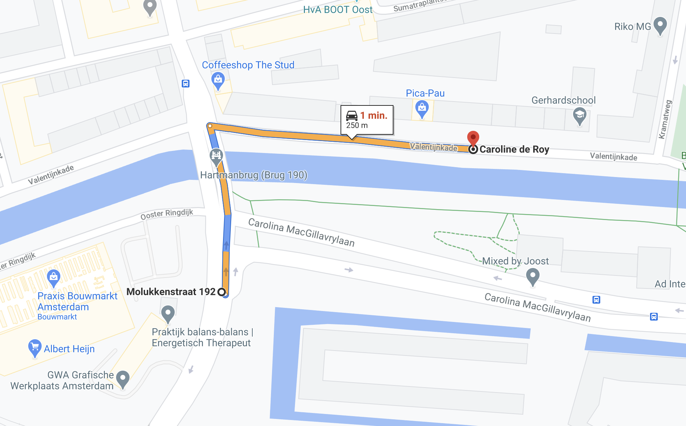

Note: this is just an example of all the possible combinations that this pointer can have.
See NIE_003 - Audio Instructions for further details
| Design | Alexey Opokin |
|---|---|
| Visual Designer | Georgios Koultouridis |
| PO | Joost Pennings |
TBD
| Pointer | After the bridge | NOTE: term Landmark and Pointer are used interchangeably here. They refer to the same object, but Landmark refers to the object itself on the road in real world, while Pointer is UI element (and audio component) which is pointing to it. |
|---|---|---|
| Description | This pointer is given when crossing a bridge | |
| Location | 52.358565421477536, 4.9409775832840355 | |
| Road Geometry |  | |
| Visual Instruction | Bridge Pointer is not visualised in the NIP. | |
| Audio Instruction | In 500m, after the bridge, turn right onto Bundestraat | |
| Audio Template | [distance] [pointer][purpose][road name/number] Note: this is just an example of all the possible combinations that this pointer can have. See NIE_003 - Audio Instructions for further details |
END OF THE DOCUMENT